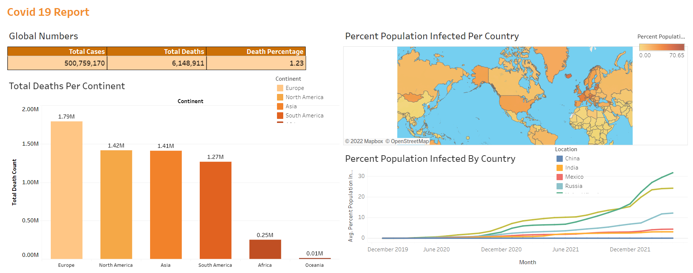

Covid 19 Report
A complete data exploratory analysis, cleaning and visualisation
was made to make a report on the situation of Covid 19 based on
deaths and cases in different continents.
Cleaning and exploratory analysis was done using
SQL.
Data visualisation was performed using Tableau.